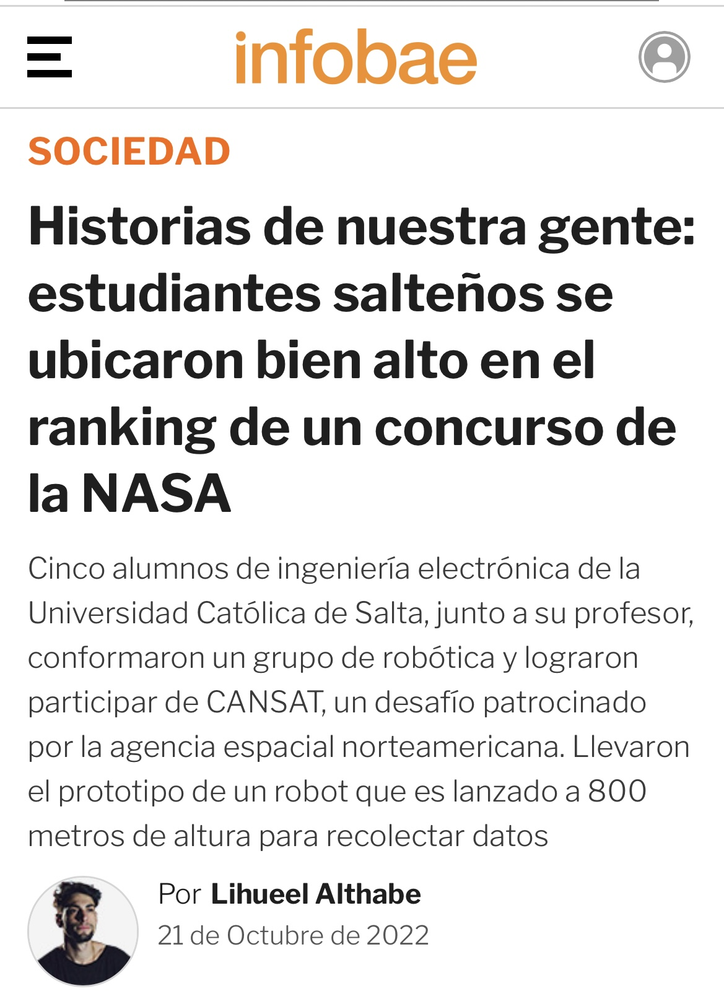

Latest projectsNov. 2024 | Project NASA's PACE satellite data in the classroom: The Plankton Aerosol Cloud ocean Ecosystem (PACE) satellite launched and has begun returning data about Earth’s oceans and atmosphere. PACE data can be difficult to understand if you are not already familiar with these types of data. This project is about to create a digestible set of materials that can be used in classrooms across the world to help students understand the data and information that PACE is gathering, and improve ocean literacy worldwide. Through "PACE Satellite in Schools", we seek to introduce young people to the fascinating world of space technology and Earth observation, sparking their interest in science, technology, engineering, mathematics, and environmental care. To know more about the project and the team visit: GIFE TEAMJuly 2022 | Cansat Competition US: Organized by the American Astronautical Society (AAS). Its about design a Cansat that shall consist of a container and a payload. The Cansat shall be launched to an altitude ranging from 670 meters to 725 meters above the launch site and deployed near apogee (peak altitude). The Cansat must survive the forces incurred at launch and deployment. The Cansat shall descend using a parachute at a rate of 15 m/s. At 400 meters, the Cansat shall deploy a larger parachute to reduce the descent rate to 5 m/s. At 300 meters, the Cansat shall release a tethered payload to a distance of 10 meters in 20 seconds. During that time, the payload shall maintain the orientation of a video camera pointing in the south direction. The video camera shall be pointed 45 degrees downward to assure terrain is in the video.

|
My technical skills and profiency technologies
|
{kind=link}